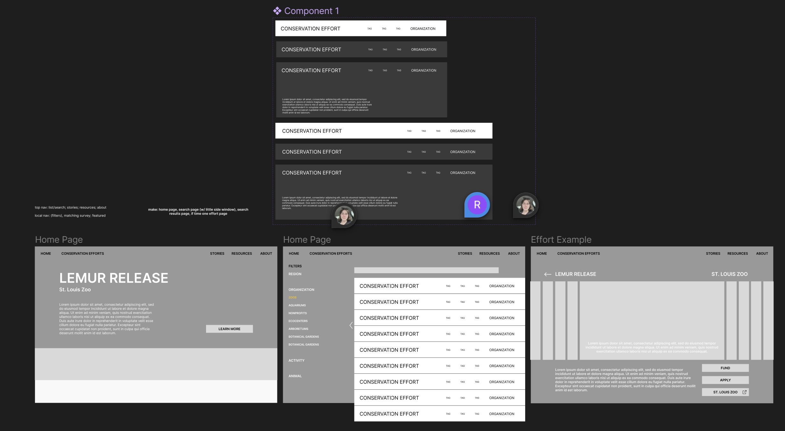

Conservation
Collective
Website Design, UX/UI
Design Goals:
1. Encourage people to support wildlife conservation efforts by getting involved directly or through financial support
2. Convey a strong narrative about each effort and give an impression of real people and community
3. Infuse with fun micro-interactions that encourage exploration and further engagement
Research & Context
Target Audience: People interested in wildlife conservation who might not know how to get involved, or where their effort would do the most good.
Key Research Insights:
1. People form emotional attachments to zoos that keep them coming back
2. Zoo visitors might indirectly support conservation efforts just by visiting for enjoyment
3. People explicitly interested in conservation choose what to get involved in based on what’s accessible and what they’ve been exposed to
4. People interested in supporting conservation might not know where they can be most helpful or what efforts even exist
5. People consider what is fun as well as impactful
Content Structure

Lo-fi Prototype
Guiding Brand Identity
1. Accessible - intuitive to use, not too obtuse
2. Interactive - encourage engagement
3. Community-oriented - join larger global community as one part of a larger whole
4. Story & emotion-driven - tell a narrative about each effort
5. Trustworthy


© Sasha Kostenko 2024. Website developed by Sasha Kostenko. alexandrakostenko5@gmail.com